버블워치사가 모작(유니티)
문서 제목 : 버블워치사가3 모작
기발 기간 : 250926~251003
개발 환경 : 유니티 Unity 6000.0.39f1 LTS
목차
- 구현기능%2027a4bccaf9eb80498652e9140bcc6ab3.md)
- 클래스별 구조%2027a4bccaf9eb80498652e9140bcc6ab3.md)
- 게임 로직 흐름%2027a4bccaf9eb80498652e9140bcc6ab3.md)
- 초기화 로직%2027a4bccaf9eb80498652e9140bcc6ab3.md)
- 버블발사 Flow%2027a4bccaf9eb80498652e9140bcc6ab3.md)
- 버블 발사 및 충돌 로직 Flow%2027a4bccaf9eb80498652e9140bcc6ab3.md)
- 버블 삭제 로직%2027a4bccaf9eb80498652e9140bcc6ab3.md)
- 디버그 모드 활성화%2027a4bccaf9eb80498652e9140bcc6ab3.md)
- 육각 Grid 구현이유%2027a4bccaf9eb80498652e9140bcc6ab3.md)
- Gird관리 및 버블 충돌로직 (DFS) 또는 BFS%2027a4bccaf9eb80498652e9140bcc6ab3.md)
- 벽과 충돌로직%2027a4bccaf9eb80498652e9140bcc6ab3.md)
- ObjectPooling%2027a4bccaf9eb80498652e9140bcc6ab3.md)
플레이 영상

구현 기능
- 메인 시작화면
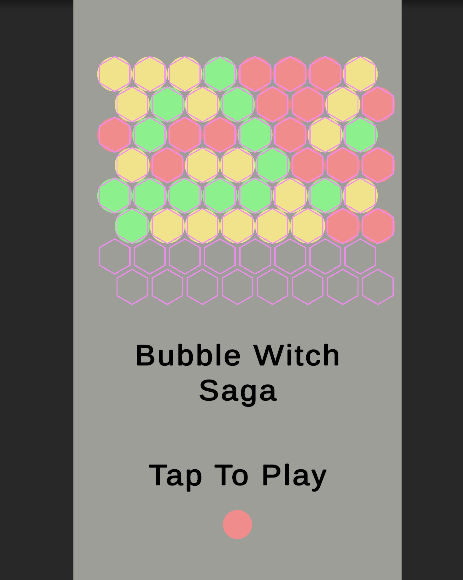
해상도 1080 x 1920으로 설정하였습니다.
간단한 UI를 만들어서 구현하였습니다.
- 추적용 미리 보기 기능
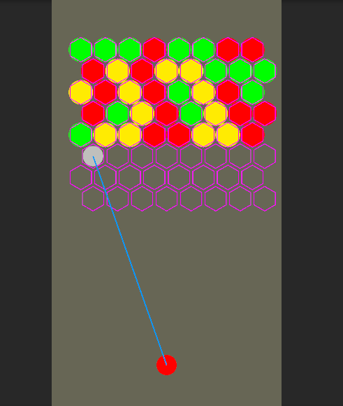
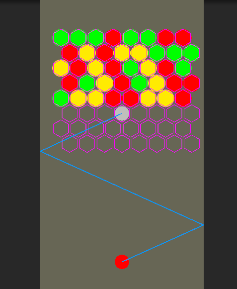
파란선을 통해 버블이 날아갈 경로를 보여주고 붙을 버블이 붙을 위치를 미리 보여줍니다
- 버블 충돌 및 떨어지는 로직 구현
같은색의 버블끼리 충돌한 경우 없애는 로직을 구현하였고 0행에 붙어 있지 않은 버블들은 떨어지는 기능을 구현하였습니다.
- 게임 시작과 재시작 로직 구현
매 게임 재 시작마다 랜덤한 버블들의 색과 수를 설정하여 재시작 할 수 있도록 하였습니다.
치트를 써서 좌클릭은 버블 발사, 우클릭은 게임 재시작 치트를 사용하였습니다.
클래스 별 구조
- Spawner
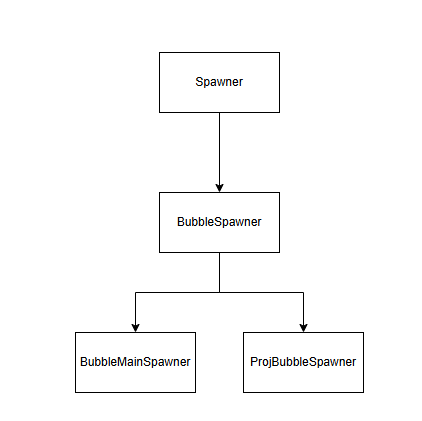
- PoolManager
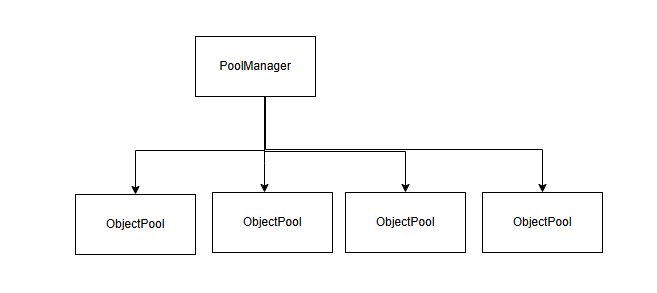
PoolManager는 Dictionary형태로 <오브젝트 타입, ObjectPool>을 관리하여 어떠한 타입에 대해서든지 간에 ObjectPooling을 할 수 있도록 하였습니다.
BubbleSpawner를 상속받는 BubbleMainSpawner(인게임 버블들을 스폰하는 스포너 역할), ProjBubbleSpawner(플레이어가 쏠 버블을 스폰하는 스포너)
- Bubble
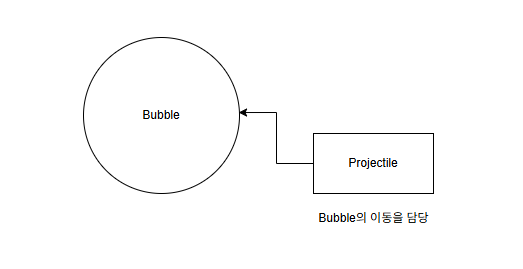
Bubble이라는 객체에 Bubble컴포넌트와 Projectile컴포넌트를 붙여 Bubble자기 자신의 색을 정의하고 Projectile컴포넌트가 이동을 담당하도록 하였습니다.
- Manager
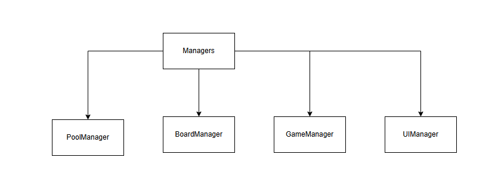
Managers클래스가 싱글톤으로 동작하며 각 Manager클래스들을 관리하고 전역으로 접근할 수 있도록 하였습니다.
게임 로직 흐름

- 게임시작
- 게임플레이
- 인게임 버블 제거 했는가?
- 제거 했다면 버블 스폰
- 제거하지 않았다면 그대로 게임 플레이
- 인게임 버블을 제거한 경우, 버블 스폰
- 버블들을 아래로 내린다.
- 모든 버블을 제거한 경우 → 클리어
- 씬 reload
- 게임 재시작
[구현 기능]
- 게임 시작 전 UI (텍스트) 구현
- 게임 시작 로직 구현
- 버블 발사 로직 (벽 튕기기, 버블과 버블 사이 가장 가까운 타일 찾기) 구현 및 버블의 예측 경로를 보여주는 기능 구현
- 버블 삭제 로직 및 예외처리 구현
- 버블 삭제후 떨어지는 버블 구현
- 모든 버블 삭제시 게임 재시작 로직 구현
초기화 로직
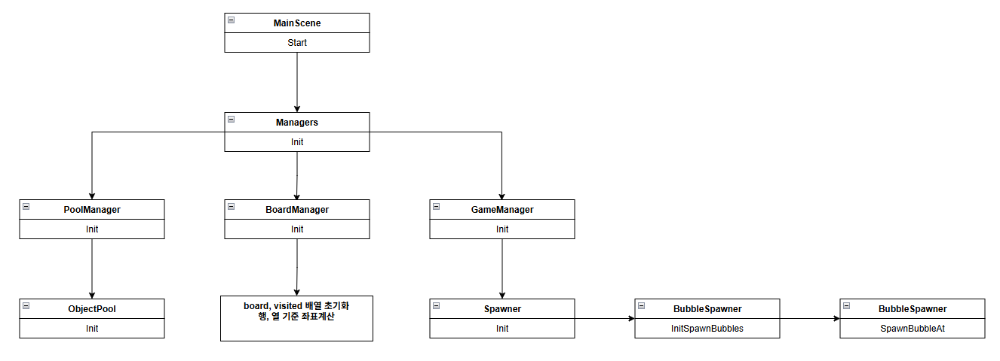
- MainScene이라는 객체가 모든 매니져들을 관리하고 각 매니져들의 초기화 함수들을 순차적으로 호출해주는 역할을 수행합니다.
- PoolManager : 오브젝트 타입들을 Define.cs에 정의하고 정의된 타입들에 따라 ObjectPool을 생성하여 ObjectPool을 관리하는 매니져 역할을 수행합니다.
- BoardManager : 버블들의 위치 및 생성과 삭제를 담당합니다. 버블들끼리 충돌 연산을 수행하지 않고 board에서 행과 열을 따져 삭제할 수 있도록 관리하는 매니져 클래스입니다.
- GameManager : 게임에 필요한 Spawner들을 생성하고 조건에 따라 게임 시작과 끝을 관리하는 매니져 클래스입니다.
버블 발사 Flow
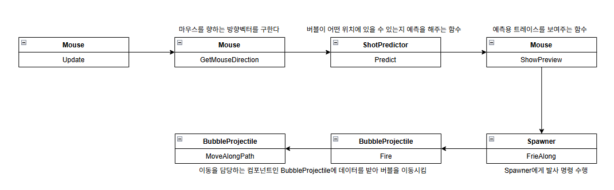
씬에 배치된 마우스로 부터 버블발사 로직까지 흐름을 정리하였습니다.
이동은 Bubble GameObject Projectile 컴포넌트를 붙여 이동을 담당하도록 하여 확장성을 높였습니다.
>
버블 발사 및 충돌 로직 Flow
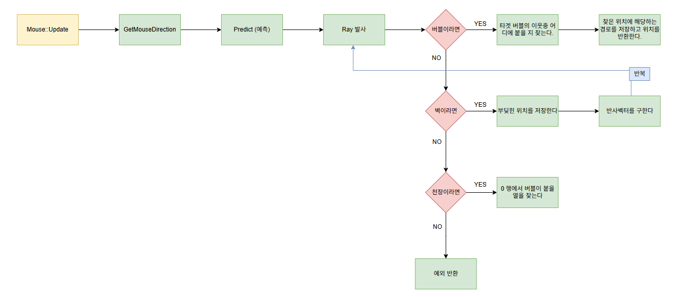
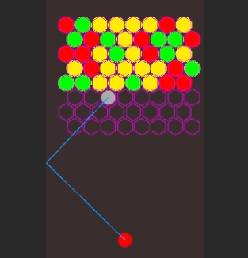
오른쪽 게임 화면 까지의 로직을 정리한 Flow입니다.
>
- 충돌시 버블인 경우 코드
📝 Code
if (IsInMask(hitLayer, bubbleMask)) // 버블인 경우
{
var bubble = hit.collider.GetComponent<Bubble>();
if (bubble != null && Managers.Board.TryPickAttachCellFromHit(hit.point, d, bubble, out targetCell, out targetWorld))
{
polyline.Add(targetWorld); // 착지 지점 표시
return (true, bubble.gameObject);
}
return (false, null);
}> 버블인 경우 TryPickAttachCellFromHit함수를 호출하여 현재 위치에서 가장 가까운 위치를 찾아 bool값을 반환합니다.
>
- TryPickAttachCellFromHit 코드
📝 Code
// 충돌 지점(hitPoint)과 진행 방향(dir), 부딪힌 버블(hitBubble) 기준으로
// "붙을 수 있는 인접 빈칸" 중에서 진행 방향과 가장 잘 맞는 칸을 선택
public bool TryPickAttachCellFromHit(Vector2 hitPoint, Vector2 dir, Bubble hitBubble, out Vector2Int cell, out Vector2 cellWorld)
{
cell = new Vector2Int(-1, -1);
cellWorld = default;
Vector2Int rc = WorldToGrid(hitBubble.transform.position);
float best = float.MaxValue;
// 해당 row의 이웃 방향들 선택
Vector2Int[] dirs = (rc.x % 2 == 0) ? EvenRowDirs : OddRowDirs;
foreach (var offset in dirs)
{
Vector2Int nb = rc + offset;
if (!IsInside(nb.x, nb.y) || !IsEmpty(nb.x, nb.y))
continue;
// 이웃칸의 월드 좌표
Vector2 w = GridToWorld(nb.x, nb.y);
// hitPoint 와의 거리
float dist = (w - hitPoint).sqrMagnitude;
if (dist < best)
{
best = dist;
cell = nb;
cellWorld = w;
}
}
return cell.x >= 0;
}- 충돌시 천장인 경우 코드
📝 Code
if (IsInMask(hitLayer, ceilingMask)) // 천장이라면 0행에서 빈칸을 선택해야한다
{
if (Managers.Board.TryPickCeilingCell(hit.point, out targetCell, out targetWorld) == true)
{
polyline.Add(targetWorld);
return (true, null);
}
return (false, null);
}> 경로를 추적할 수 있도록 위치를 Add해주고 true를 return 하여 줍니다.
>
- 충돌시 벽인 경우 코드
📝 Code
if (IsInMask(hitLayer, wallMask))
{
polyline.Add(hit.point); // 경로저장
Vector2 r = Vector2.Reflect(d, hit.normal).normalized;
d = r;
p = centerAtHit + r * EPS; // 중심 기준으로 살짝 이동
continue; // 벽이라면 건너 뛴다.
}> 벽인 경우 튕겨야 하기때문에 반사벡터를 구하여 다시 Ray를 쏠 수 있도록 조절합니다.
>
- Predict 함수 전체 코드
📝 Code
public (bool success, GameObject hitObject) Predict(Vector3 start, Vector2 dir, out List<Vector3> polyline, out Vector2Int targetCell, out Vector2 targetWorld)
{
polyline = new List<Vector3> { start };
targetCell = default;
targetWorld = default;
Vector2 p = start;
Vector2 d = dir.normalized;
float projRadius = Managers.Board.radius; // 혹은 ShotPredictor 필드로 분리
int mask = wallMask.value | bubbleMask.value | ceilingMask.value;
const float EPS = 0.01f; // 표면에 달라붙는 것 방지용
for (int i = 0; i < maxBounces + 5; i++)
{
RaycastHit2D hit = Physics2D.CircleCast(p, projRadius, d, maxDistance, mask);
Debug.DrawRay(p, d * hit.distance, Color.yellow, 0f);
if (hit==false) return (polyline.Count > 1, null);
Vector2 centerAtHit = p + d * hit.distance; // 중심 위치
int hitLayer = hit.collider.gameObject.layer; // 레이어 값
if (IsInMask(hitLayer, bubbleMask)) // 버블인 경우
{
var bubble = hit.collider.GetComponent<Bubble>();
if (bubble != null && Managers.Board.TryPickAttachCellFromHit(hit.point, d, bubble, out targetCell, out targetWorld))
{
polyline.Add(targetWorld); // 착지 지점 표시
return (true, bubble.gameObject);
}
return (false, null);
}
if (IsInMask(hitLayer, ceilingMask)) // 천장이라면 0행에서 빈칸을 선택해야한다
{
if (Managers.Board.TryPickCeilingCell(hit.point, out targetCell, out targetWorld) == true)
{
polyline.Add(targetWorld);
return (true, null);
}
return (false, null);
}
if (IsInMask(hitLayer, wallMask))
{
polyline.Add(hit.point); // 경로저장
Vector2 r = Vector2.Reflect(d, hit.normal).normalized;
d = r;
p = centerAtHit + r * EPS; // 중심 기준으로 살짝 이동
continue; // 벽이라면 건너 뛴다.
}
// 혹시 모르는 레이어면 스톨 방지
p = hit.point + d * EPS;
}
return (false, null);
}버블 삭제 로직
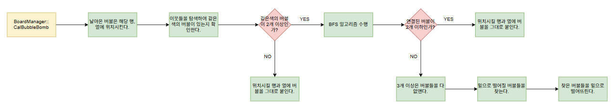
- 전체 코드
📝 Code
public void CalBubbleBomb(Bubble projBubble, Vector2Int targetCell)
{
// TODO
if (projBubble == null)
{
Debug.Log("projBubble == null");
return;
}
SetBubble(targetCell.x, targetCell.y, projBubble); // board에 설정
projBubble.SetBubbleRC(targetCell); // 날아가는 bubble의 행과 열 설정
Define.BubbleColor projBubbleColor = projBubble.color;
int sameColorCount = 0;
Bubble sameColorTargetBubble = null;
List<Bubble> bubbleCluster;
// targetCell 주변으로 색이 같은 버블이 있는지 아닌지 찾아야한다.
foreach (var nb in GetNeighbors(targetCell.x, targetCell.y))
{
if (nb.x < 0 || nb.x >= rows || nb.y < 0 || nb.y >= cols) continue;
if (board[nb.x, nb.y] == null) continue;
Define.BubbleColor nbColor = board[nb.x, nb.y].color;
if (projBubbleColor == nbColor)
{
sameColorTargetBubble = board[nb.x, nb.y];
sameColorCount++;
}
}
if (sameColorCount != 0) // 같은색의 버블이 존재한다 -> BFS 탐색을 수행한다. -> 몇개의 같은 색의 버블이 이어져 있는지 확인해야한다.
{
if (projBubble != null)
{
BFS(projBubble, out bubbleCluster);
if (bubbleCluster.Count <= 2) // 딱 붙어야하는 경우 (target만 bubbleCluster에 넣어진 경우)
{
ArrivedBubble(projBubble, targetCell);
}
else // 3개 이상 연결된 경우 -> 폭파시켜야 하는 경우
{
bubbleCluster.Add(projBubble);
RemoveClusterBubbles(bubbleCluster);
FindFallDownBubbles(); // 떨어져야할 버블을 찾는 함수
}
}
}
else // 같은 색의 버블이 존재하지 않는다 -> 해당 타일에 현재 버블을 붙인다.
ArrivedBubble(projBubble, targetCell);
}
private void BFS(Bubble startBubble, out List<Bubble> BubbleCluster)
{
// 초기화
BubbleCluster = new List<Bubble>();
visited = new bool[rows, cols];
if (startBubble == null)
{
Debug.LogError("BFS: targetBubble is null");
return;
}
Vector2Int startRC = startBubble.curRC;
if (startRC.x < 0 || startRC.x >= rows || startRC.y < 0 || startRC.y >= cols)
{
Debug.LogError($"BFS: startBubble.curRC out of range {startRC}");
return;
}
Define.BubbleColor targetColor = startBubble.color;
Queue<Vector2Int> q = new Queue<Vector2Int>();
visited[startRC.x, startRC.y] = true;
q.Enqueue(startRC);
while (q.Count > 0)
{
Vector2Int now = q.Dequeue();
Bubble curBubble = board[now.x, now.y];
if (curBubble == null) continue;
BubbleCluster.Add(curBubble);
foreach (var nb in GetNeighbors(now.x, now.y))
{
int nr = nb.x, nc = nb.y;
if (nr < 0 || nr >= rows || nc < 0 || nc >= cols) continue;
if (visited[nr, nc]) continue;
Bubble nextBubble = board[nr, nc];
if (nextBubble != null && nextBubble.color == targetColor)
{
visited[nr, nc] = true;
q.Enqueue(new Vector2Int(nr, nc));
}
}
}
}
private void ArrivedBubble(Bubble arrivedBubble, Vector2Int arrivedCell)
{
SetBubble(arrivedCell.x, arrivedCell.y, arrivedBubble); // 해당 타일에 버블을 붙인다.
// 2) Projectile 멈추기
Projectile proj = arrivedBubble.GetComponent<Projectile>();
if (proj != null)
proj.Stop();
else
{
Debug.LogError("BubbleProjectile null");
}
}
private void FindFallDownBubbles()
{
visited = new bool[rows, cols];
for (int j = 0; j < cols; ++j)
{
if (board[0, j] == null) continue; // 비어있는 칸은 건너 뛴다.
if (visited[0, j]) continue;
// 0행에 연결되어 있지 않다면 고아 버블이다. -> DFS나 BFS로 처리를 해야한다.
FindAndDropOrphanBubbles(0, j);
}
}
private void FindAndDropOrphanBubbles(int startRow, int startCol)
{
Queue<Vector2Int> q = new Queue<Vector2Int>();
// 1) 0행에서 시작해서 연결된 버블 찾기
for (int c = 0; c < cols; c++)
{
if (board[0, c] != null)
{
visited[0, c] = true;
q.Enqueue(new Vector2Int(0, c));
}
}
while (q.Count > 0)
{
var now = q.Dequeue();
Bubble cur = board[now.x, now.y];
if (cur == null) continue;
foreach (var nb in GetNeighbors(now.x, now.y))
{
int nr = nb.x, nc = nb.y;
if (nr < 0 || nr >= rows || nc < 0 || nc >= cols) continue;
if (visited[nr, nc]) continue;
Bubble next = board[nr, nc];
if (next != null)
{
visited[nr, nc] = true;
q.Enqueue(new Vector2Int(nr, nc));
}
}
}
// 2) 방문되지 않은 버블 = 고아 버블
for (int r = 1; r < rows; r++)
{
for (int c = 0; c < cols; c++)
{
if (board[r, c] != null && !visited[r, c])
{
Bubble orphan = board[r, c];
board[r, c] = null;
// 물리 중력 적용해서 떨어뜨리기
Rigidbody2D rb = orphan.gameObject.AddComponent<Rigidbody2D>();
rb.gravityScale = 1f;
// (선택) 일정 시간 후 제거
// Object.Destroy(orphan.gameObject, 3f);
}
}
}
}
private void RemoveClusterBubbles(List<Bubble> cluster)
{
foreach (Bubble bubble in cluster)
{
ClearCell(bubble.curRC.x, bubble.curRC.y); // board를 비운다.
bubble.Claer();
Managers.Pool.Despawn(bubble.gameObject, Define.ObjType.Bubble); // 반환한다.
currentInBoardBubble--;
}
}사용된 함수
- CalBubbleBomb : 폭파시킬 버블들의 전체 로직의 Entry Point를 담당하는 함수
- BFS : 날아간 버블을 기준으로 같은색의 버블이 몇개 연결되어 있는지 BFS로 탐색하는 함수
- ArrivedBubble : BFS알고리즘을 수행하지 않는 경우 날아가는 버블을 그대로 목표한 행과 열에 부착시키는 함수
- FindFallDownBubbles : 떨어질 버블들을 찾는함수, BFS알고리즘을 0행만에 대해서 수행하여 떨어질 버블들을 구하는 함수.
디버그 모드 활성화
Managers Start함수에서 아래 if문 주석을 치면 디버그용 Hex를 끄고 킬 수 있습니다.
📝 Code
public void Start()
{
if (s_instance._board.showDebug)
s_instance._board.BuildDebugTiles(this.transform); // 여기에 parent로 현재 오브젝트 transform 전달
}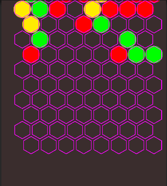
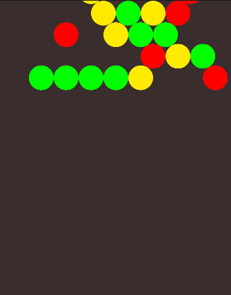
육각 Grid 구현이유
구현이유 : 우선 구현을 어떻게 할지 생각해본 결과 육각 타일이 충돌 검사를 하지 않고 행과열로 충분히 계산할 수 있을거 같다라는 생각이 들었고 모작할 대상인 게임을 플레이해본결과 육각 타일을 사용한 것이라 확신이 들어 육각 모양의 타일을 선택하여 구현하였습니다.
>

- 하나의 큰 Grid를 만들고 행과열의 개념을 넣었습니다.
- GridManager를 만들고 GridManager가 육각형 타일들을 관리할 수 있도록 하였습니다.
- 타일은 육각형모양으로 만들고 그 안에 버블들을 배치합니다.
- 육각형 타일들을 배치한 이유?
> 우선 발사대에서 버블을 발사하여 배치되어 있는 버블에 충돌을 한경우 이어져 있는 버블들을 제거해야합니다. 이때 복잡한 로직을 사용하기 보다 DFS알고리즘을 통해 6방향에 해당하는 버블들이 이어져있지 않을 때까지 탐색하기 위해 육각형으로 배치하였습니다.
>
- 새로운 버블 생성
0행에서부터 새로운 버블들을 생성합니다. 이때 ObjectPooling(선택)을 통해서 버블들을 생성하도록 하였습니다.
- 육각 타일 생성코드
📝 Code
public void BuildDebugTiles(Transform parent)
{
if (debugParent != null)
UnityEngine.Object.DestroyImmediate(debugParent);
debugParent = new GameObject("__HexDebug");
debugParent.transform.SetParent(parent, false);
for (int r = 0; r < rows; r++)
{
for (int c = 0; c < cols; c++)
{
var go = new GameObject($"Hex_{r}_{c}");
go.transform.SetParent(debugParent.transform, false);
go.transform.position = GridToWorld(r, c);
var lr = go.AddComponent<LineRenderer>();
lr.widthMultiplier = debugLineWidth;
lr.loop = true;
lr.positionCount = 6;
lr.useWorldSpace = true;
lr.numCapVertices = 2;
lr.sortingOrder = 1000;
lr.sortingLayerName = "UI";
lr.SetPositions(HexVerts(go.transform.position, radius));
}
}
}
// 육각형 6개의 꼭짓점 좌표 생성
private Vector3[] HexVerts(Vector2 center, float r)
{
var v = new Vector3[6];
for (int i = 0; i < 6; i++)
{
float deg = 60f * i - 30f; // pointy-top 헥사 기준
float rad = deg * Mathf.Deg2Rad;
v[i] = new Vector3(center.x + r * Mathf.Cos(rad), center.y + r * Mathf.Sin(rad), 0f);
}
return v;
}Gird관리 및 버블 충돌로직 BFS
구현이유 : 충돌을 직접 수행하지 않고 타일기반으로 구현을 하였기에 BFS알고리즘으로 효율적으로 제거할 버블들을 찾을 수 있도록 하였습니다.
>
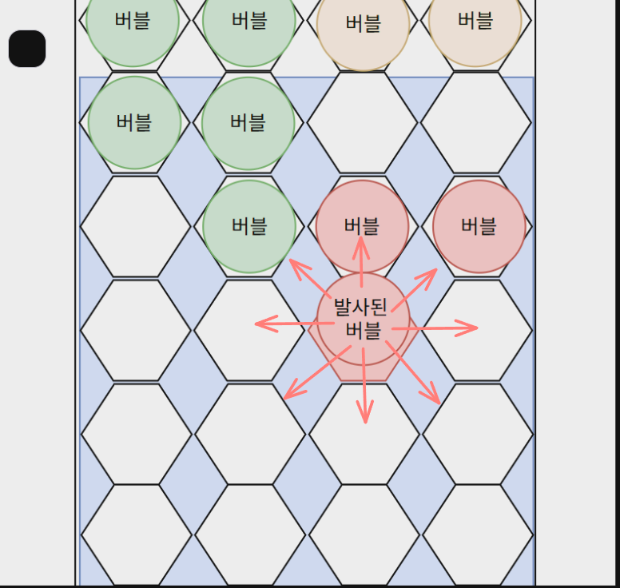
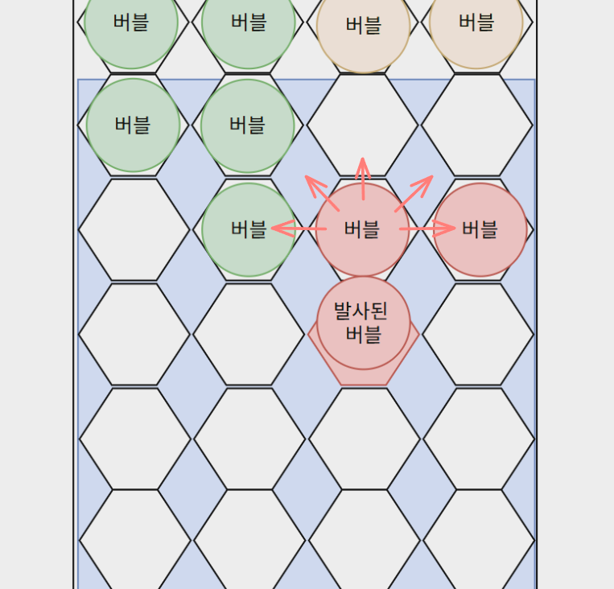
- 버블이 발사되어 현재 위치에서 도착한 경우
- 8방향에 대해서 연결된 타일들이 있는지 검사합니다.
- 연결된 타일들이 가지고 있는 버블의 색이 도착한 버블의 색과 동일한지 확인합니다.
- 방문한 타일이라면 탐색하지 않습니다.
- 동일하다면 삭제할 리스트에 추가를 합니다.
- 2번을 반복하고 더이상 연결된 타일이 없고 동일한 색이 아닐때까지 반복합니다.
- Code
📝 Code
private void BFS(Bubble startBubble, out List<Bubble> BubbleCluster)
{
// 초기화
BubbleCluster = new List<Bubble>();
visited = new bool[rows, cols];
if (startBubble == null)
{
Debug.LogError("BFS: targetBubble is null");
return;
}
Vector2Int startRC = startBubble.curRC;
if (startRC.x < 0 || startRC.x >= rows || startRC.y < 0 || startRC.y >= cols)
{
Debug.LogError($"BFS: startBubble.curRC out of range {startRC}");
return;
}
Define.BubbleColor targetColor = startBubble.color;
Queue<Vector2Int> q = new Queue<Vector2Int>();
visited[startRC.x, startRC.y] = true;
q.Enqueue(startRC);
while (q.Count > 0)
{
Vector2Int now = q.Dequeue();
Bubble curBubble = board[now.x, now.y];
if (curBubble == null) continue;
BubbleCluster.Add(curBubble);
foreach (var nb in GetNeighbors(now.x, now.y))
{
int nr = nb.x, nc = nb.y;
if (nr < 0 || nr >= rows || nc < 0 || nc >= cols) continue;
if (visited[nr, nc]) continue;
Bubble nextBubble = board[nr, nc];
if (nextBubble != null && nextBubble.color == targetColor)
{
visited[nr, nc] = true;
q.Enqueue(new Vector2Int(nr, nc));
}
}
}
}벽과 충돌 로직
구현이유 : 학습의 목적에서 직접 구현하여 반사 벡터를 구현하였습니다.
>
- 변경점
기존에는 Collider2D, Circle Collision 2D를 버블에 달아 벽에 부딪힌 경우 반사 벡터를 통해 튕겨지도록 구현하였는데 버블워치사가 플레이를 하면서 타일 기반 방식이라는 것을 알아서 버블이 이동할 경로를 저장하고 해당 경로를 따라 버블이 이동할 수 있도록 만 하는 식으로 구현을 변경하였습니다.
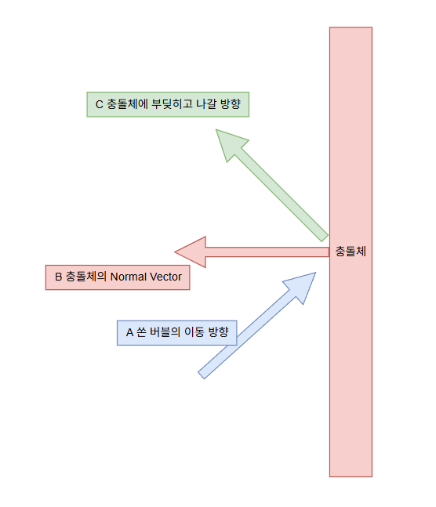
충돌체는 인게임 오른쪽, 왼쪽, 아래, 위에 배치합니다.
쏜 버블의 이동방향 벡터를 A(정규화 수행)라 하고 충돌체의 법선 벡터(B)를 구하여 두 벡터를 더하여 버블이 튕겨나갈 방향벡터를 구합니다.
수식은 아래와 같습니다. 반사벡터 C = A - 2(B dot A) * B
R=A−2(A⋅B)B
- 반사벡터 원리정리
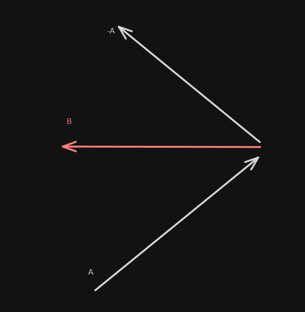
B벡터를 벽에 노말벡터라고 가정하고 A를 버블의 이동 방향 벡터라고 가정하겠습니다.
A벡터를 뒤집은 벡터를 -A라 하고 두 벡터를 내적한 값을 B벡터에 곱해줍니다.
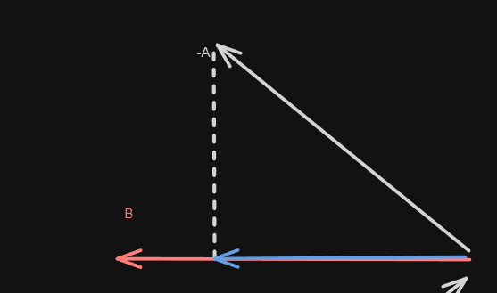
B와 -A를 내적하게 되면 정사형한 파란색 벡터가 나오게 되고 파란색 백터에 B를 곱해줍니다.
B벡터는 정규화 되어 있기때문에 파란색 벡터또한 크기가 1인 벡터가 됩니다.
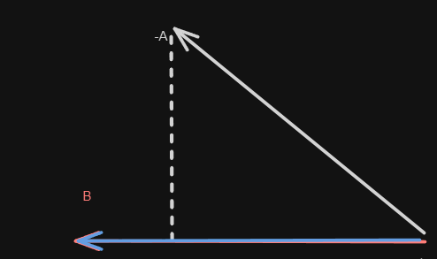
위까지의 과정이 -(B dot A) * B입니다.
위 파란벡터를 두배를 하면 아래 그림 처럼 됩니다.
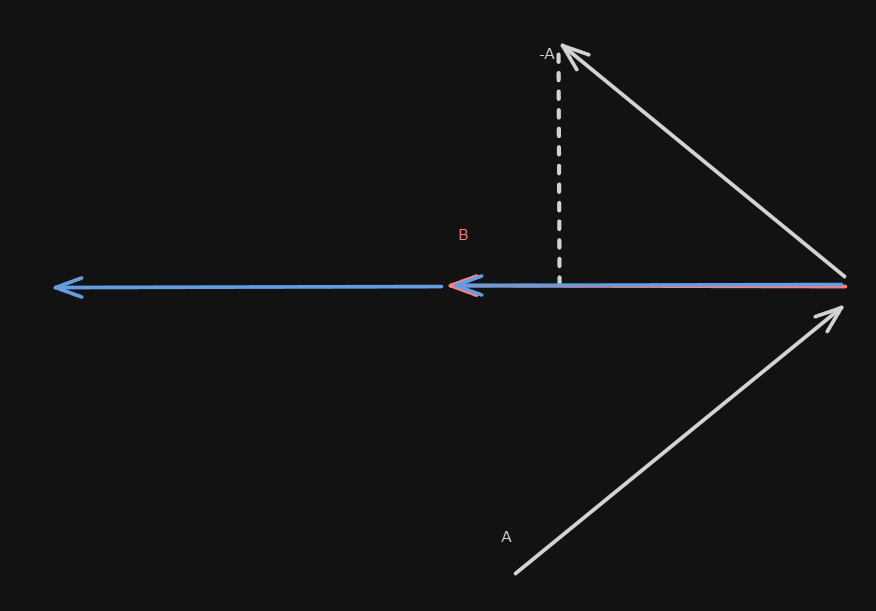
A벡터에서 위 파란 벡터를 뺄셈을 수행하면
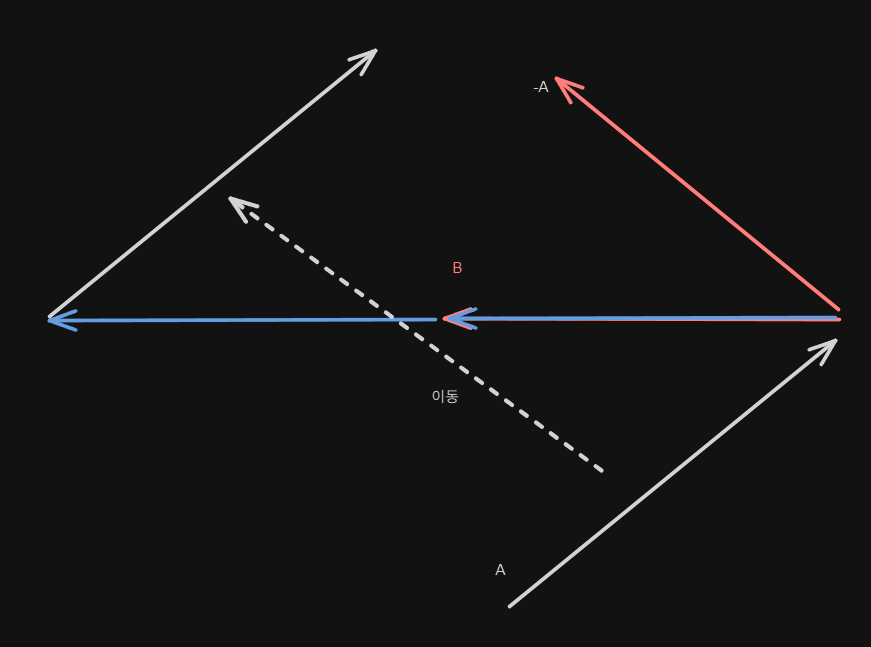
빨간색 벡터가 나오게 되고 정확히 반사벡터를 구할 수 있습니다.
C(빨간벡터) = A - 2(B dot A) * B
ObjectPooling
구현이유 : 잦은 동적할당은 메모리 단편화기 발생할 수 있고 이로인한 성능저하 및 오버헤드를 증가시킬 수 있기 때문에 오브젝트 풀링을 구현하였습니다.
Queue를 사용하여 풀링한 오브젝트를 선입선출 방식으로 구현하였습니다.
- ObjectPool Code
📝 Code
using System.Collections.Generic;
using UnityEngine;
public class ObjectPool : MonoBehaviour
{
[Header("References")]
public GameObject prefab;
public int poolSize = 100;
protected int activeObjectCount;
protected int deactiveObjectCount;
private Queue<GameObject> poolQueue = new Queue<GameObject>();
private void Awake()
{
for (int i = 0; i < poolSize; ++i)
{
var obj = Instantiate(prefab, transform);
obj.SetActive(false);
poolQueue.Enqueue(obj);
}
activeObjectCount = 0;
deactiveObjectCount = poolSize;
}
public GameObject GetFromPool()
{
if (poolQueue.Count > 0)
{
var obj = poolQueue.Dequeue();
obj.SetActive(true);
activeObjectCount += 1;
deactiveObjectCount -= 1;
Debug.Log($"Active Object Count = {activeObjectCount}, Deactive Object Count = {deactiveObjectCount}");
return obj;
}
else
{
var obj = Instantiate(prefab, transform);
poolQueue.Enqueue(obj);
return obj;
}
}
public void ReturnToPool(GameObject obj)
{
obj.SetActive(false);
poolQueue.Enqueue(obj);
activeObjectCount -= 1;
deactiveObjectCount += 1;
Debug.Log($"Active Object Count = {activeObjectCount}, Deactive Object Count = {deactiveObjectCount}");
}
}- 작업 정리
- 250926 작업 목록
[작업 순서]
- 기본 기획 문서 작성
- 작성한 자료 및 문서들
- 게임 로직 도식화
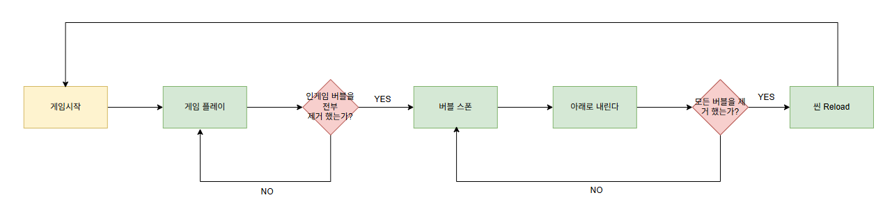
- Gird 틀
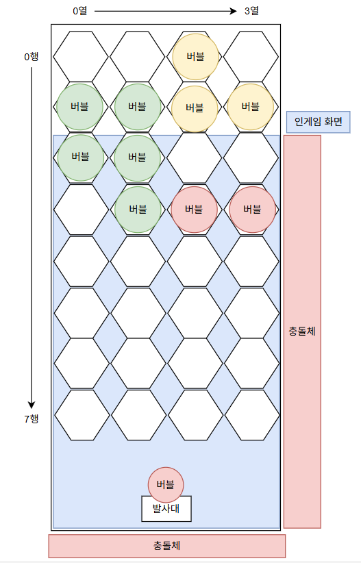
- 벽과 충돌 로직

- 기본 스크립트 작성
- 레벨에 배치할 기본 오브젝트 생성 및 스크립트 컴포넌트 부착
- ObjectPool 구현
- Spawner들 구현
- Mouse 로직 구현
[구현한 코드들]
- GridManager
📝 Code
using System;
using System.Collections.Generic;
using UnityEditor.ShaderGraph.Internal;
using UnityEngine;
using UnityEngine.LightTransport;
using UnityEngine.UIElements;
public class GridManager : MonoBehaviour
{
[Header("Grid Size")]
public int rows = 16;
public int cols = 12;
[Header("Hex Geometry")]
public float radius = 0.5f; // hex 반지름
public float topY = 4.5f; // 0행 기준 y좌표
[Header("Debug View")]
public bool showDebug = true;
public float debugLineWidth = 0.02f;
private float cellW, cellH; // 헥사 가로 세로
private float leftX; // col = 0 기준 x
private GameObject debugParent;
// ────────────────────────────────
// Unity 생명주기
// ────────────────────────────────
private void Awake()
{
ComputeLayout(); // 행, 열 기준 좌표계 계산
if (showDebug)
BuildDebugTiles();
}
private void OnValidate()
{
// 인스펙터에서 값 바뀔 때마다 좌표계 다시 계산
ComputeLayout();
}
// ────────────────────────────────
// 레이아웃 계산
// ────────────────────────────────
private void ComputeLayout()
{
cellW = 2f * radius; // 가로 간격 = 지름
cellH = Mathf.Sqrt(3f) * radius; // 세로 간격 = 루트 3 * r
leftX = -cols * radius; // 0열 기준 왼쪽 x
}
// ────────────────────────────────
// 좌표 변환
// ────────────────────────────────
// Grid 좌표(row, col) → 월드 좌표(x, y)로 변환하는 함수
// - odd-r 오프셋(pointy-top) 육각 그리드 기준
// - r은 행(row), c는 열(col)
// - cellW = 2*radius (가로 간격: 지름)
// - cellH = √3*radius (세로 간격: pointy-top 육각의 수직 간격)
// - topY는 0행(맨 위 행) 센터가 위치할 y기준 값이며,
// 0행의 센터 y는 (topY - radius)가 된다.
// - leftX는 0열의 기준 x 오프셋으로, 0열 센터 x는 (leftX + radius).
// - odd-r: 홀수 행(row%2==1)은 x가 반 칸(=radius) 오른쪽으로 밀린다.
// → xOffset = radius (홀수 행), 0 (짝수 행)
public Vector2 GridToWorld(int row, int col)
{
// 홀수 행이면 x를 반 칸(right) 보정 (오프셋)
float xOffset = (row % 2 == 1) ? radius : 0f;
// 열(col)에 따라 가로로 cellW씩 이동, 행 홀짝에 따라 xOffset 추가
// 0열 센터 x = leftX + radius
float x = leftX + radius + col * cellW + xOffset;
// 위에서 아래로 갈수록 y가 감소
// 0행 센터 y = (topY - radius)
// row가 1 증가할 때마다 cellH만큼 아래로 내려감
float y = (topY - radius) - row * cellH;
return new Vector2(x, y);
}
// 월드 좌표(x, y) → 근사 Grid 좌표(row, col)로 변환하는 함수
// - 스냅/충돌 시 “가장 가까운 칸”을 빠르게 찾는 용도
// - 절대적인 다각형 내부 판정보다 근사치가 필요할 때 사용
// 동작 순서:
// 1) y로부터 row를 추정: 0행 기준(topY - radius)에서 얼마나 내려왔는지 cellH로 나눠 반올림
// 2) 그 row의 홀짝에 맞춰 xOffset을 결정
// 3) x에서 col을 추정: (x - (leftX + radius + xOffset)) / cellW 를 반올림
// 4) 경계 밖으로 나가지 않게 row/col을 Clamp
public Vector2Int WorldToGrid(Vector2 world)
{
// 1) y → row (0행 기준에서 world.y가 얼마나 내려왔는지)
int row = Mathf.RoundToInt(((topY - radius) - world.y) / cellH);
row = Mathf.Clamp(row, 0, rows - 1);
// 2) 해당 row의 홀짝에 따라 x 오프셋 결정(odd-r)
float xOffset = (row % 2 == 1) ? radius : 0f;
// 3) x → col (0열 기준인 leftX + radius + xOffset에서의 상대 위치를 cellW로 나눠 반올림)
float colF = (world.x - (leftX + radius + xOffset)) / cellW;
int col = Mathf.RoundToInt(colF);
col = Mathf.Clamp(col, 0, cols - 1);
return new Vector2Int(row, col);
}
// ────────────────────────────────
// Debug 헥사 타일 생성
// ────────────────────────────────
private void BuildDebugTiles()
{
// 이전 디버그 오브젝트 제거
if (debugParent != null) DestroyImmediate(debugParent);
debugParent = new GameObject("__HexDebug");
debugParent.transform.SetParent(transform, false);
for (int r = 0; r < rows; r++)
{
for (int c = 0; c < cols; c++)
{
var go = new GameObject($"Hex_{r}_{c}");
go.transform.SetParent(debugParent.transform, false);
go.transform.position = GridToWorld(r, c);
var lr = go.AddComponent<LineRenderer>();
lr.widthMultiplier = debugLineWidth;
lr.loop = true;
lr.positionCount = 6;
lr.useWorldSpace = true;
lr.numCapVertices = 2;
lr.sortingOrder = 1000;
lr.sortingLayerName = "UI";
lr.SetPositions(HexVerts(go.transform.position, radius));
}
}
}
// 육각형 6개의 꼭짓점 좌표 생성
private Vector3[] HexVerts(Vector2 center, float r)
{
var v = new Vector3[6];
for (int i = 0; i < 6; i++) {
float deg = 60f * i - 30f; // pointy-top 헥사 기준
float rad = deg * Mathf.Deg2Rad;
v[i] = new Vector3(center.x + r * Mathf.Cos(rad), center.y + r * Mathf.Sin(rad), 0f);
}
return v;
}
}- Bubble
📝 Code
using UnityEngine;
public class Bubble : MonoBehaviour
{
public enum BubbleColor
{
Red, Yellow, Green,
}
[Header("Bubble Info")]
public BubbleColor color;
private SpriteRenderer sr;
public float radius;
private void Awake()
{
sr = GetComponent<SpriteRenderer>();
}
// GridManager의 radius에 맞게 스케일 조절
public void AdjustScale(float targetRadius)
{
if (sr == null) sr = GetComponent<SpriteRenderer>();
// 1. 스프라이트의 "로컬 반지름"(스케일 적용 전 크기)
float localSpriteRadius = sr.sprite.bounds.extents.x;
if (localSpriteRadius <= 0f) return;
// 2. targetRadius(월드 단위)로 맞추기 위한 스케일
float scale = targetRadius / localSpriteRadius;
transform.localScale = new Vector3(scale, scale, 1f);
// 3. CircleCollider2D를 로컬 반지름으로 맞추기
var circle = GetComponent<CircleCollider2D>();
if (circle != null) {
circle.radius = localSpriteRadius; // 로컬 값 그대로 넣기
circle.offset = sr.sprite.bounds.center; // Pivot이 Center가 아니면 보정
}
// 4. Bubble 내부에서 쓰는 "월드 반지름" 저장
radius = targetRadius;
// 5. 물리엔진 즉시 동기화 (중요)
Physics2D.SyncTransforms();
}
public void ApplyColor()
{
switch (color)
{
case BubbleColor.Red: sr.color = Color.red; break;
case BubbleColor.Yellow: sr.color = Color.yellow; break;
case BubbleColor.Green: sr.color = Color.green; break;
}
}
public void ResetBubble(BubbleColor newColor, float targetRadius)
{
color = newColor;
ApplyColor();
AdjustScale(targetRadius);
}
private void OnTriggerEnter2D(Collider2D other)
{
Debug.Log("Collision detected with " + other.name);
BubbleProjectile bubbleComp = GetComponent<BubbleProjectile>();
if (bubbleComp != null){
if (other.CompareTag("WallLeft")){
bubbleComp.ChangeDir(BubbleProjectile.ProjDir.Left);
}
else if (other.CompareTag("WallRight")){
bubbleComp.ChangeDir(BubbleProjectile.ProjDir.Right);
}
else if (other.CompareTag("WallTop")){
bubbleComp.ChangeDir(BubbleProjectile.ProjDir.Top);
}
else if (other.CompareTag("WallBottom")){
bubbleComp.ChangeDir(BubbleProjectile.ProjDir.Bottom);
}
else if (other.CompareTag("Bubble")) {
Debug.Log("Col With Bubble");
}
}
}
}- BubbleProjectile
📝 Code
using NUnit.Framework.Internal.Execution;
using UnityEngine;
public class BubbleProjectile : MonoBehaviour
{
public enum ProjDir
{
Left, Right, Top, Bottom
}
[Header("Refenrences")]
public ObjectPool objectPool;
public GameObject owner;
public float speed = 3f; // 이동속도
public Vector2 direction; // 발사 방향
public System.Action<BubbleProjectile> onArrived; // 도착/충돌 시 이벤트
private bool isFlying = false;
private Rigidbody2D rb;
private void Start()
{
rb = owner.GetComponent<Rigidbody2D>();
}
private void Update()
{
if (!isFlying) return;
rb.linearVelocity = direction * speed; // Rigidbody2D 물리 속도로 이동
// transform.position += (Vector3)(direction * speed * Time.deltaTime);
if (Mathf.Abs(transform.position.x) > 10f || Mathf.Abs(transform.position.y) > 10f)
Stop();
}
public void Stop()
{
isFlying = false;
onArrived.Invoke(this);
}
public void Launch(Vector2 dir)
{
direction = dir.normalized;
isFlying = true;
}
public void ChangeDir(ProjDir dirType)
{
switch (dirType) {
case ProjDir.Left: {
direction = direction - 2f * Vector2.Dot(direction, Vector2.right) * Vector2.right;
break;
}
case ProjDir.Right: {
direction = direction - 2f * Vector2.Dot(direction, Vector2.left) * Vector2.left;
break;
}
case ProjDir.Bottom: {
Stop();
break;
}
case ProjDir.Top: {
Stop();
break;
}
}
}
}Bubble 오브젝트에 Circle Collider 붙이고 Rigid2D붙인다
그리고 Wall BoxCollider붙인다. 그러면 로그가 찍힘. 아 물론 태그도 설정해야함
- ObjectPool
📝 Code
using Mono.Cecil.Cil;
using System.Collections.Generic;
using System.Threading;
using Unity.VisualScripting;
using UnityEngine;
public class ObjectPool : MonoBehaviour
{
[Header("References")]
public GameObject prefab;
public int poolSize = 100;
protected int activeObjectCount;
protected int deactiveObjectCount;
private Queue<GameObject> poolQueue = new Queue<GameObject>();
private void Awake()
{
for (int i = 0; i < poolSize; ++i)
{
var obj = Instantiate(prefab, transform);
obj.SetActive(false);
poolQueue.Enqueue(obj);
}
activeObjectCount = 0;
deactiveObjectCount = poolSize;
}
public GameObject GetFromPool()
{
if(poolQueue.Count > 0)
{
var obj = poolQueue.Dequeue();
obj.SetActive(true);
activeObjectCount += 1;
deactiveObjectCount -= 1;
Debug.Log($"Active Object Count = {activeObjectCount}, Deactive Object Count = {deactiveObjectCount}");
return obj;
}
else
{
var obj = Instantiate(prefab, transform);
poolQueue.Enqueue(obj);
return obj;
}
}
public void ReturnToPool(GameObject obj)
{
obj.SetActive(false);
poolQueue.Enqueue(obj);
activeObjectCount -= 1;
deactiveObjectCount += 1;
Debug.Log($"Active Object Count = {activeObjectCount}, Deactive Object Count = {deactiveObjectCount}");
}
}- ProjectileSpawner
📝 Code
using UnityEditor.Rendering.BuiltIn.ShaderGraph;
using UnityEngine;
using UnityEngine.InputSystem;
public class ProjectileSpawner : MonoBehaviour
{
public ObjectPool pool;
public Transform firePoint;
public GridManager gridManager; // 스케일 맞추기 위해 참조
private void Update()
{
if (Keyboard.current.spaceKey.wasPressedThisFrame)
{
Fire(Vector2.right);
}
}
private void Fire(Vector2 dir)
{
// 1) 풀에서 버블 가져오기
GameObject bubbleGO = pool.GetFromPool();
bubbleGO.transform.position = firePoint.position;
// 2) Bubble 초기화
var bubble = bubbleGO.GetComponent<Bubble>();
var randColor = (Bubble.BubbleColor)Random.Range(0, 3);
bubble.ResetBubble(randColor, gridManager.radius);
// 3) Projectile 붙이기
var proj = bubbleGO.AddComponent<BubbleProjectile>();
proj.Launch(dir);
// 4) Projectile 도착하면 풀로 반환
proj.onArrived = (p) =>
{
Debug.Log("Return Bubble Object To Pool");
pool.ReturnToPool(bubbleGO);
};
bubbleGO.GetComponent<BubbleProjectile>().objectPool = pool;
bubbleGO.GetComponent<BubbleProjectile>().owner = bubbleGO;
}
}- Spawner
📝 Code
using UnityEngine;
public class Spawner : MonoBehaviour
{
[Header("References")]
public GridManager gridManager;
public ObjectPool pool; // 풀을 통한 버블 생성
[Header("Spawn Settings")]
public int spawnRows = 5; // 시작 시 몇 행 채울지
private void Start()
{
SpawnInitialBubbles();
}
public void SpawnInitialBubbles()
{
if (gridManager == null || pool == null)
{
Debug.LogWarning("Spawner: gridManager 또는 pool이 연결되지 않았습니다.");
return;
}
int rowsToFill = Mathf.Min(spawnRows, gridManager.rows);
for (int r = 0; r < rowsToFill; r++)
{
for (int c = 0; c < gridManager.cols; c++)
{
if (Random.value < 0.5f) continue;
SpawnBubbleAt(r, c);
}
}
}
public void SpawnBubbleAt(int row, int col)
{
// 풀에서 오브젝트 가져오기
GameObject bubbleGO = pool.GetFromPool();
// GridManager를 통해 월드 좌표 계산
Vector2 worldPos = gridManager.GridToWorld(row, col);
bubbleGO.transform.position = worldPos;
bubbleGO.transform.SetParent(transform, false);
// Bubble 컴포넌트 초기화
var bubble = bubbleGO.GetComponent<Bubble>();
if (bubble != null) {
var randColor = (Bubble.BubbleColor)Random.Range(0, 3);
bubble.ResetBubble(randColor, gridManager.radius);
}
// 나중에 그리드에 등록
// gridManager.Set(bubble, row, col);
}
}- Mouse
📝 Code
using UnityEngine;
using UnityEngine.InputSystem; // 이 줄을 꼭 추가해야 합니다!
public class Mouse : MonoBehaviour
{
public ProjectileSpawner ProjSpawner;
public Camera cam;
private void Reset()
{
if (cam == null) cam = Camera.main;
}
void Update()
{
if (ProjSpawner == null)
return;
if (Input.GetMouseButtonDown(0)) {
Vector2 dir = GetMouseDirection();
ProjSpawner.Fire(dir);
}
}
private Vector2 GetMouseDirection()
{
// 1) 마우스 스크린 좌표 (픽셀 단위)
Vector3 mouseScreenPos = Input.mousePosition;
// 2) 스크린 좌표 → 월드 좌표
mouseScreenPos.z = -cam.transform.position.z; // 카메라가 z=-10이라면 z=10
Vector3 mouseWorldPos = cam.ScreenToWorldPoint(mouseScreenPos);
// 3) 발사 시작 위치
Vector3 startPos = ProjSpawner.transform.position;
// 4) 방향 벡터 계산 (단위 벡터화)
Vector2 dir = (mouseWorldPos - startPos).normalized;
return dir;
}
}- 250927 작업 목록
[작업 순서]
- 아래 구현할 목록들에 대해 기획안 작성
- 충돌체(벽)제작 및 충돌 확인 테스트
- 테스트 완료 잘 튕기는 것을 확인 11:30
- 원끼리의 충돌확인하기
- DFS 로직 → GirdManager에 구현
- Bubble이 터지는 로직 좀더 모작에 가깝게 구현
- Spawn하고 Bubble들을 내리는 로직 구현
- 250928 작업 목록
- public void CalBubbleBomb(Bubble projBubble, Bubble other) 함수 런타임 에러 원인 찾고 수정하기
- 생각정리
아예 충돌을 하는 부분들을 없애버리고 타일 기반으로만 충돌처리를 수행해도 되나?
→ 충돌체가 필요 없다. 타일 기반으로 탐색을 하여 삭제를 해준다.
- [x] path가 정확하게 찾아지지 않는 문제 해결하기
- [x] 버블을 스폰할 때 get, set RC를 하는 로직을 구현
- [x] CalBubbleBomb함수 내부에서 targetCell 주변으로 같은 색의 버블이 있는지 없는지 확인하는 로직이 필요
- [x] 버블 부시는 로직 필요함.
- [x] ProjSpawner에 미리 버블의 색을 스폰해서 보여주는 기능이 필요
- ProjSpawner에 미리 생성하고 버블의 색을 보여주는 기능이 필요
- 위 기능을 수행하기 위해서 Mouse에서 Bubble의 상태를 확인하는 로직이 필요
- [x] BubbleProj 붙이고 반환할때 때어내는 작업이 필요하다
- [ ] tile을 반환 하는 부분이 이상하다
- 250929 작업 목록
- [x] 전체 플레이 테스트
- [x] 버블이 떨어지는로직 구현
- [ ] 버블이 전부다 없어진 경우 게임 재시작 할 수 있도록 유도
- BoardManager에 접근해서 모든 board가 다 비어있는지 확인은 수행함.
- 이제 true가 나온 경우 Game이 끝났다라는 것을 표현해주어야함.
- 250930 작업 목록
- [x] 버블이 다 사라지며 게임을 재시작 할 수 있는 로직 작성
- [ ] Random 행의 개수만큼 버블들을 채우기